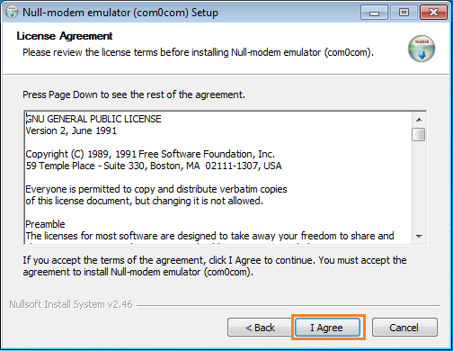
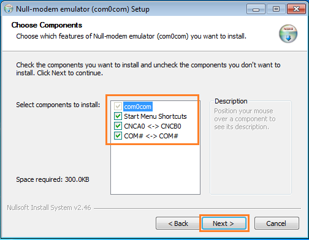
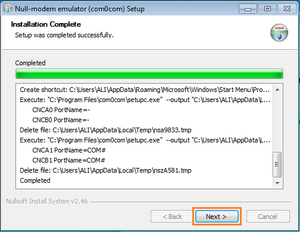
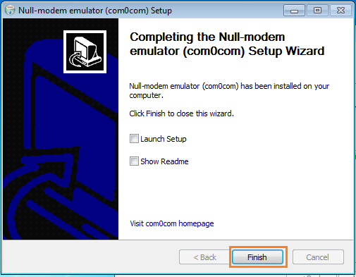
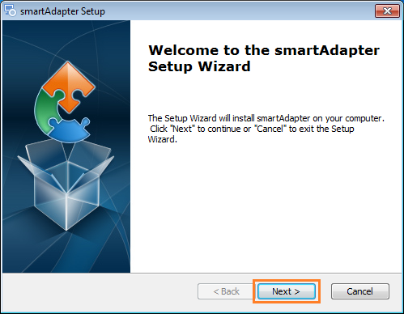
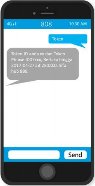

SmartAdapter
Smartfren akhirnya merilis sebuah aplikasi yang mengadaptasikan OtomaX dengan sistem Smartfren, sehingga kini Anda dapat isi ulang pulsa smartfren secara online melalui OtomaX (bisa dibilang: smartfren-web), aplikasi tersebut bernama SmartAdapter. Kabar baiknya SmartAdapter ini bisa diperoleh dan digunakan secara gratis.
Berikut ini langkah - langkah mensetting SmartAdapter di OtomaX:
- Pastikan Anda mempunyai chip Eload Smartfren, hubungi dealer Smartfren di kota Anda.
- Download aplikasi SmartAdapter klik disini (Pilih 32bit atau 64bit sesuaikan dengan Sistem Operasi yang Anda gunakan).
-
Pilih file SmartAdapter yang baru Anda download -> klik kanan -> klik Run as Administrator, akan muncul jendela seperti di bawah ini dan klik Next

-
Pilih I accept the terms in the License Agreement dan klik Next

-
Pastikan Java(TM) Platform SE 6 U45 dan com0com dicentang dan klik Install, perhatikan gambar di bawah ini:

-
Klik Install

Tunggu proses instalasi...

Klik Close

-
Klik Next

Klik I Agree

Pastikan Start Menu Shortcuts, CNCA0 CNCB0 dan COM# COM# dicentang dan klik Next, perhatikan gambar di bawah ini:

Klik Install
Tunggu proses instalasi...

Klik Install

Klik Next
Klik Finish
-
Klik Next

Klik Next

Klik Install

Tunggu proses instalasi...
Klik Finish
-
Dengan chip Eload Smartfren ketik SMS: Token kirim ke 808 atau 877 untuk mendapatkan Token Akses
Anda akan mendapatkan Token ID dan Token Phrase (huruf besar kecil berpengaruh) yang nanti akan dimasukkan ke aplikasi SmartAdapter.
-
Jalankan aplikasi SmartAdapter, ikuti petunjuk pada gambar di bawah ini dan terakhir klik Save serta klik Run:
Catatan: Token Akses yang diterima akan habis masa berlakunya setelah 12 jam, sehingga Anda harus meminta Token Akses baru dengan mengirimkan SMS meminta Token seperti langkah sebelumnya.
-
Masuk ke Device Manager di PC, disana akan muncul COM baru seperti gambar di bawah ini, pada contoh ini tersedia COM4 dan COM5

-
Masuk ke Otomax, pilih Terminal -> klik kanan -> klik Tambah Terminal..., lakukan sesuai petunjuk di gambar di bawah ini, dan terakhir klik Simpan:

-
Pilih modul SMS -> klik kanan -> klik Tambah SMS..., lakukan sesuai petunjuk di gambar di bawah ini, dan terakhir klik Simpan:
-
Klik Administrasi -> Parsing ke Provider, buat parsing sesuai petunjuk di gambar di bawah ini:
-
Klik Administrasi -> Jawaban dari Provider, buat penangkap jawaban sesuai balasan - balasan yang dikirimkan SmartAdapter. Konsep membuat penangkap jawaban klik disini.
- Selesai
Kemudian jika Anda memiliki pertanyaan seputar SmartAdapter, kirimkan melalui email ke alamat: support@otomax-software.com atau klik disini.